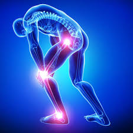

ברוכים הבאים לאתר EasyGo
אתר זה מיועד להציג את הפרטים האישיים, התחביבים והישגי הקורסים של הסטודנטים בצוות שלנו.
שאלות ותשובות - פרויקט
האתר של ה-CDC (Centers for Disease Control and Prevention) מתמקד במתן מידע ומחקר על בריאות הציבור ומניעת מחלות בארצות הברית ובעולם. תחום העיסוק המרכזי שלו הוא הנגשת מידע עדכני ואמין על מחלות, מגפות, חיסונים, בריאות סביבתית, מניעת פציעות ועוד. האתר מציע למשתמשים נתונים סטטיסטיים, הנחיות בריאותיות, פרסומים מדעיים, כלי חינוך ומידע על תוכניות למניעת מחלות ושיפור הבריאות. הוא פונה לקהל רחב, כולל אנשי מקצוע בתחום הבריאות, חוקרים, מחנכים והציבור הכללי, ומספק גם עדכונים חירומיים על מגפות או אירועי בריאות ציבוריים.
קישור לאתר: לחצו כאן
- ?How is jet lag treated

- ?What are the symptoms of jaundice
- ?What causes joint pain 
קישור לקוד בגיט: GitHub Repository
בפרויקט זה נעשה שימוש במגוון טכנולוגיות מעניינות שמדגימות את השימוש בכמה כלי עבודה מתקדמים באוטומציה, עיבוד נתונים, ותהליכי ניתוח טקסט:
- Selenium:
ספרייה פופולרית לאוטומציה של דפדפנים לצורך גישה לאתרי אינטרנט וביצוע פעולות כמו מילוי טפסים, ניווט, ולחיצה על כפתורים. בפרויקט נעשה שימוש ב-Selenium כדי לבצע חיפוש באתר ה-CDC ולנווט בין דפי תוצאות. בנוסף, כתיבת קוד ב-Python אפשרה לבצע אינטראקציות מתקדמות כמו מילוי שדות חיפוש ו"קליקים" מותאמים אישית על פי הדרישות של האתר.
- BeautifulSoup:
ספרייה לניתוח מבנה HTML ולהפקת נתונים מאתרי אינטרנט. בפרויקט נעשה שימוש ב-BeautifulSoup כדי לאסוף תוצאות חיפוש (כותרות וקישורים) ולנתח אותן. בקוד, הפעלנו את הספרייה כדי "לפרק" את מבנה ה-HTML של הדפים שנשלפו באמצעות Selenium, מה שאפשר לזהות אלמנטים חשובים כמו תגיות כותרת וקישורים פנימיים.
- Pandas:
ספרייה לעיבוד וניתוח נתונים בצורה יעילה באמצעות טבלאות. שימשה ליצירת קובץ Excel עם התוצאות, הדירוג, ומאגר האינדקס ההפוך (Inverted Index). בפרויקט נכתב קוד שהמיר את הנתונים הגולמיים לטבלאות מסודרות, וכלל פילטרים וניתוחים סטטיסטיים שתרמו להצגת התוצאות בצורה ברורה ויעילה.
- NLTK:
ספרייה לעיבוד שפה טבעית. שימשה להסרת מילים נפוצות (Stop Words), חיתוך מילים (Stemming), ולניתוח טקסטים על מנת לחלץ משמעות ממילות השאילתה. בפרויקט, הוספנו שלב שבו כל מילות המפתח שנאספו נותחו באמצעות NLTK כדי להבטיח שהשאילתות שנוצרו ממוקדות ומדויקות יותר. בקוד השתמשנו בפונקציות כמו
word_tokenizeו-PorterStemmerכדי לבצע עיבוד מקדים לכל טקסט שנאסף.
זמן הריצה הממוצע של השאילתות הוא כ-20 שניות.
במה זה תלוי:
- ביצועי הרשת ומהירות טעינת הדפים.
- יעילות העיבוד של Selenium ו-BeautifulSoup.
- משאבי המחשב הזמינים בזמן הריצה.
הצעות לשיפור זמן הריצה:
- הפחתת זמני המתנה באמצעות WebDriverWait במקום time.sleep.
- עיבוד טקסט מקבילי בעזרת ספריות כמו concurrent.futures.
- מעבר לשימוש ב-API רשמי של CDC (אם קיים) במקום Web Scraping עם Selenium.
| Word | Indexes |
|---|---|
| hepat | [20, 20, 24, 24, 25, 25, 26, 26, 27, 27, 30, 30, 33, 33, 34, 34, 37, 56, 56] |
| symptom | [20, 21, 22, 23, 24, 25, 26, 27, 28, 29, 30, 32, 39, 46, 53, 54] |
| health | [2, 3, 8, 8, 10, 15, 15, 22, 44, 49, 50, 50] |
| yellow | [0, 2, 3, 5, 6, 7, 9, 16, 18, 21, 21] |
| cdc | [0, 2, 3, 5, 6, 7, 9, 16, 18] |
| book | [0, 2, 3, 5, 6, 7, 9, 16, 18] |
| sign | [20, 22, 24, 26, 27, 29, 30, 32, 39] |
| clinic | [20, 27, 30, 32, 33, 34, 35] |
| travel | [2, 6, 22, 50, 50] |
| reproduct | [8, 8, 10, 15, 15] |
| viru | [21, 28, 53, 54, 57] |
| viral | [33, 33, 37, 56, 56] |
| arthriti | [40, 42, 45, 49, 52] |
| vaccin | [19, 47, 51, 51] |
| fever | [21, 21, 41, 41] |
| Title | TF-IDF Score |
|---|---|
| Aircrew and Jet Lag | 1.399901693 |
| Jet Lag | CDC Yellow Book 2024 | 0.839941016 |
| Flu Vaccination by Jet Injector | Influenza (Flu) | 0.316186664 |
| Complementary & Integrative Health Approaches to Travel Wellness | CDC Yellow Book 2024 | 0 |
| Mental Health | CDC Yellow Book 2024 | 0 |
| Aircrew and Workplace Exposures | 0 |
| Deep Vein Thrombosis & Pulmonary Embolism | CDC Yellow Book 2024 | 0 |
| Traveling Safely with Infants & Children | CDC Yellow Book 2024 | 0 |
| Road & Traffic Safety | CDC Yellow Book 2024 | 0 |
| About Work Schedules and Reproductive Health | Reproductive Health and The Workplace | 0 |
| The Pretravel Consultation | CDC Yellow Book 2024 | 0 |
| Aircrew and Reproductive Health | 0 |
| Module 9. Coping with the Night and Evening Shifts, Sleep (Continued) | 0 |
| Module 3. Injuries/Errors (Continued) Groups at Risk for Crashes | 0 |
| Module 9. Coping with the Night and Evening Shifts, References | 0 |
| Other Sources of Information about Work Schedules and Sleep | 0 |
| Examples of Jobs and Reproductive Health | Reproductive Health | 0 |
| Table of Contents | CDC Yellow Book 2024 | 0 |
| Site Index | 0 |
| Substance Use & Substance Use Disorders | CDC Yellow Book 2024 | 0 |
בדפים שהוחזרו קיימים גם Hubs וגם Authorities.
Authorities: דפים אלה מספקים מידע מעמיק ואמין בנושאים ספציפיים ומקבלים הפניות ממקורות רבים. לדוגמה, הדף Authority example נחשב ל-Authority, מכיוון שהוא מספק מידע מקיף על מחלת "הגאוט", כולל תסמינים, גורמי סיכון ואפשרויות טיפול. דף זה מהווה מקור סמכותי בתחום הבריאות והרפואה.
Hubs: דפים אלה מתפקדים כמרכזי קישורים ומפנים למקורות מידע נוספים בנושאים רלוונטיים. לדוגמה, הדף Hub example נחשב ל-Hub, מאחר שהוא מרכז קישורים לדפים נוספים בנושאים כמו מניעה, נתונים אפידמיולוגיים ומידע למחנכים בתחום הבריאות.
הסבר: דפי Authority ממוקדים בהצגת תוכן אמין שמבוסס על מומחיות, בעוד ש-Hubs משמשים כאינדקסים שמרכזים קישורים לדפים רלוונטיים אחרים. בדפים שהוחזרו מה-CDC ניתן לזהות את שני הסוגים הללו, כאשר ה-CDC עצמו הוא אתר סמכותי הכולל הן תוכן מומחה (Authorities) והן מרכזי קישורים (Hubs).
:PageRank values after iteration 2
:Highest PageRank after second iteration
Page: https://www.cdc.gov/niosh/aviation/preventionPageRank Value: 0.750
קישור לקוד בגיט: PageRank Github
Shahaf:
- https://www.cdc.gov/niosh/aviation/prevention/ - R
- https://www.cdc.gov/niosh/aviation/prevention/aircrew-jetlag.html - NR
- https://www.cdc.gov/niosh/aviation/prevention/aircrew-reproductive-health.html - NR
- https://wwwnc.cdc.gov/travel/yellowbook/2024/additional-considerations/substance-use - R
- https://wwwnc.cdc.gov/travel/yellowbook/2024/air-land-sea/deep-vein-thrombosis-and-pulmonary-embolism - NR
- https://wwwnc.cdc.gov/travel/yellowbook/2024/air-land-sea/jet-lag - R
- https://wwwnc.cdc.gov/travel/yellowbook/2024/family/infants-and-children - R
- https://wwwnc.cdc.gov/travel/yellowbook/2024/preparing/complementary-and-integrative - NR
- https://wwwnc.cdc.gov/travel/yellowbook/2024/preparing/mental-health - NR
- https://wwwnc.cdc.gov/travel/yellowbook/2024/preparing/pretravel-consultation - R
Yuval:
- https://www.cdc.gov/niosh/aviation/prevention/ - R
- https://www.cdc.gov/niosh/aviation/prevention/aircrew-jetlag.html - R
- https://www.cdc.gov/niosh/aviation/prevention/aircrew-reproductive-health.html - R
- https://wwwnc.cdc.gov/travel/yellowbook/2024/additional-considerations/substance-use - R
- https://wwwnc.cdc.gov/travel/yellowbook/2024/air-land-sea/deep-vein-thrombosis-and-pulmonary-embolism - NR
- https://wwwnc.cdc.gov/travel/yellowbook/2024/air-land-sea/jet-lag - NR
- https://wwwnc.cdc.gov/travel/yellowbook/2024/family/infants-and-children - NR
- https://wwwnc.cdc.gov/travel/yellowbook/2024/preparing/complementary-and-integrative - NR
- https://wwwnc.cdc.gov/travel/yellowbook/2024/preparing/mental-health - NR
- https://wwwnc.cdc.gov/travel/yellowbook/2024/preparing/pretravel-consultation - NR
האם ניתן להציע שאילתא מותאמת על מנת לשפר תוצאות?
- פילטר על פי תוכן דף ומילות מפתח: דפים שמזכירים במפורש את הביטוי "jet lag treatment" או "remedies" יקבלו משקל גבוה יותר.
- שימוש במשוב המשתמשים: שילוב משוב המשתמשים בקביעת דירוג: דפים שסומנו כ"רלוונטיים" על ידי שניהם יקבלו עדיפות גבוהה יותר בתוצאות.
| User | Precision | Recall |
|---|---|---|
| Shahaf | 0.5 | 0.333333 |
| Yuval | 0.4 | 0.266667 |